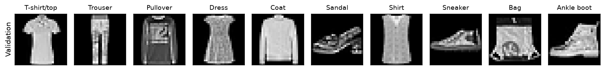
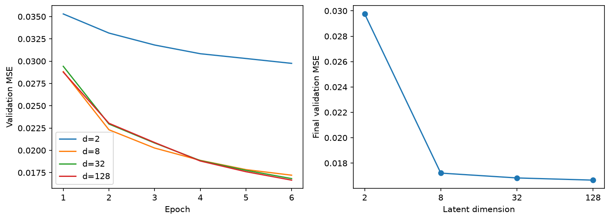
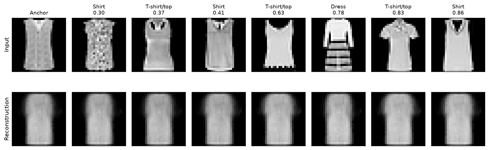
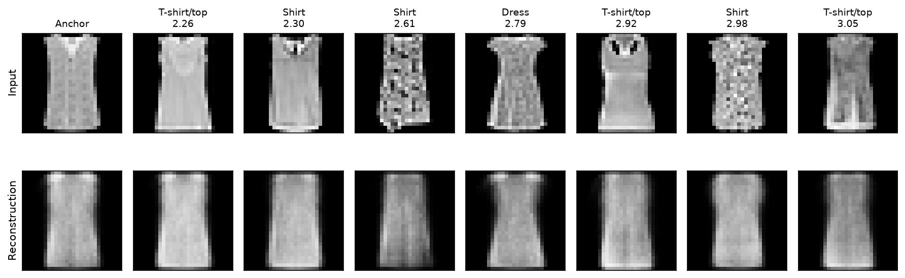
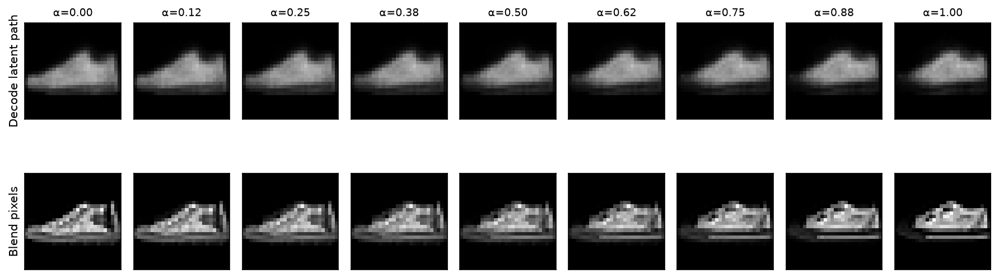
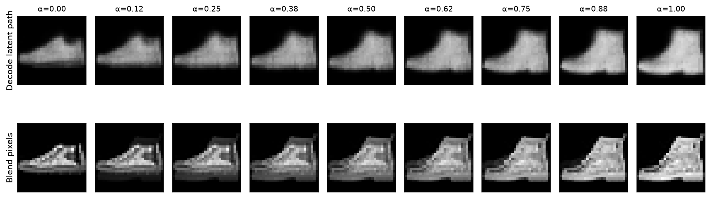
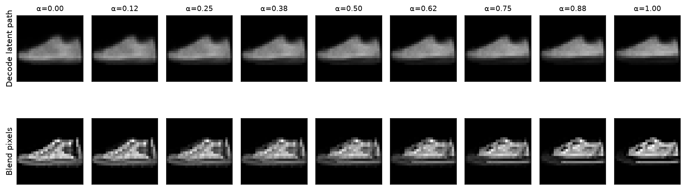
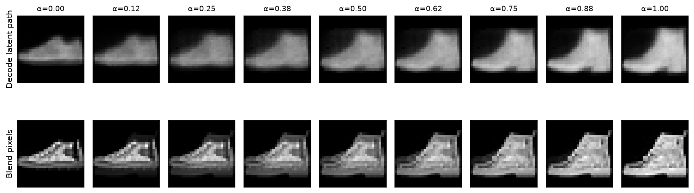

import os, json, random, time
from pathlib import Path
import numpy as np
import matplotlib.pyplot as plt
import torch
from torch import nn
from torch.utils.data import DataLoader, Subset
from torchvision.datasets import FashionMNIST
from torchvision.transforms import ToTensor
SEED = 41
DIMS = (2, 8, 32, 128)
EPOCHS = 6 # use 1 for debugging, then restore 6 for every d
BATCH_SIZE = 256
LR = 1e-3
DEVICE = torch.device('cuda' if torch.cuda.is_available() else 'cpu')
DATA_DIR = Path(os.environ.get('COURSE_DATA_DIR', 'data'))
OUT = Path(os.environ.get('COURSE_OUTPUT_DIR', 'latent-results'))
OUT.mkdir(parents=True, exist_ok=True)
CHECKPOINT_DIR = Path(os.environ.get('COURSE_CHECKPOINT_DIR', str(OUT/'checkpoints')))
CHECKPOINT_DIR.mkdir(parents=True, exist_ok=True)
torch.set_num_threads(min(4, os.cpu_count() or 1))
def seed_all(seed):
random.seed(seed)
np.random.seed(seed)
torch.manual_seed(seed)
if torch.cuda.is_available():
torch.cuda.manual_seed_all(seed)
torch.backends.cudnn.benchmark = False
torch.backends.cudnn.deterministic = True
seed_all(SEED)
print('device:', DEVICE, '| torch:', torch.__version__)Project 3 · The Latent Laboratory
Fashion-MNIST · PyTorch · compression · neighborhoods · interpolation
Train one autoencoder family, then investigate three questions:
- What survives when the latent dimension is small?
- Which examples become neighbors, and how does this change with dimension?
- What does the decoder produce between two encoded images?
Implement the five marked tasks. Data loading, optimization, PCA displays, plotting, widgets, and exports are provided infrastructure. Labels never enter the reconstruction loss. Complete the written investigations as well as the code. The expected results below come from one reference run; they are not numerical targets you must match exactly. CPU/GPU and library differences affect training.
Colab: choose a GPU runtime if available. Locally, install torch, torchvision, numpy, matplotlib, and ipywidgets in your environment. The notebook downloads Fashion-MNIST on first use. It requires no course files.
1 · Download, split, and inspect
Fashion-MNIST contains 28×28 grayscale garment images. We split its 60,000 training examples into 50,000 fitting and 10,000 validation examples using a fixed permutation. The official 10,000 test images remain untouched until the final evaluation cell. Use validation images for every dimension comparison, map, neighbor investigation, and interpolation experiment.
Subset stores indices referring to the same underlying dataset, not copied image tensors. Each DataLoader obtains batches through those references:
full_train: 60,000 images + labels
├── train_set: 50,000 indices ──> shuffled training batches
└── val_set: 10,000 indices ──> ordered validation batches
official test_set: 10,000 images ──> final evaluation only
Autoencoder(nn.Module)
├── encoder: owns Flatten + Linear/ReLU layers ──> z
└── decoder: owns Linear/ReLU + Sigmoid/Unflatten ──> x_hat
models[d] references a separately trained Autoencoder for that dimension.
histories[d] contains its measured epoch losses, not another model.full_train = FashionMNIST(DATA_DIR, train=True, download=True, transform=ToTensor())
test_set = FashionMNIST(DATA_DIR, train=False, download=True, transform=ToTensor())
order = torch.randperm(len(full_train), generator=torch.Generator().manual_seed(SEED))
train_ids, val_ids = order[:50000], order[50000:]
train_set = Subset(full_train, train_ids.tolist())
val_set = Subset(full_train, val_ids.tolist())
class_names = full_train.classes
assert len(set(train_ids.tolist()) & set(val_ids.tolist())) == 0
assert len(train_set) == 50000 and len(val_set) == len(test_set) == 10000
def train_loader():
# A fresh generator gives each d the same batch order for the same epoch.
return DataLoader(train_set, batch_size=BATCH_SIZE, shuffle=True,
generator=torch.Generator().manual_seed(SEED), num_workers=0)
val_loader = DataLoader(val_set, batch_size=512, shuffle=False, num_workers=0)
val_labels = full_train.targets[val_ids]
# Balanced inspection subset; no label is given to the model.
inspect_ids = torch.cat([(val_labels == k).nonzero().flatten()[:100] for k in range(10)])
inspect_set = Subset(val_set, inspect_ids.tolist())
inspect_loader = DataLoader(inspect_set, batch_size=256, shuffle=False)
def savefig(fig, name):
fig.savefig(OUT / name, dpi=150, bbox_inches='tight')
plt.show()
plt.close(fig)
def image_grid(rows, row_labels, titles, name):
fig, axes = plt.subplots(len(rows), len(rows[0]),
figsize=(12, 2.2 * len(rows)), squeeze=False)
for r, row in enumerate(rows):
for c, im in enumerate(row):
axes[r,c].imshow(torch.as_tensor(im).detach().cpu().squeeze(),
cmap='gray', vmin=0, vmax=1)
axes[r,c].set_xticks([]); axes[r,c].set_yticks([])
if c == 0: axes[r,c].set_ylabel(row_labels[r])
if r == 0: axes[r,c].set_title(titles[c], fontsize=9)
fig.tight_layout(); savefig(fig, name)
audit = [val_set[int((val_labels == k).nonzero()[0])][0] for k in range(10)]
image_grid([audit], ['Validation'], class_names, 'batch.png')
print('train / validation / test:', len(train_set), len(val_set), len(test_set))
Expected check: 50000 / 10000 / 10000. Explain why a label may color a scatterplot without being a training target. The same input scaling must be used for training, reconstruction error, and every displayed image.
2 · Task A: build the parameterized autoencoder
Use 784 → 256 → 128 → d → 128 → 256 → 784. Hidden layers use ReLU; the latent layer is linear. The output uses Sigmoid, then restores (N,1,28,28). Define self.encoder, self.decoder, and forward. No path may bypass z.
Each arrow is a deterministic transformation, not a probabilistic dependency:
(N,1,28,28) -> Flatten -> (N,784) -> (N,256) -> (N,128)
|
(N,d)
|
(N,1,28,28) <- Unflatten <- (N,784) <- (N,256) <- (N,128)class Autoencoder(nn.Module):
def __init__(self, d):
super().__init__()
# TODO A: define the encoder and decoder specified above.
raise NotImplementedError('Implement the architecture')
def forward(self, x):
# TODO A: encode, then decode; return the reconstructed batch.
raise NotImplementedErrorfor d in DIMS:
m = Autoencoder(d)
x = torch.rand(5, 1, 28, 28)
z, y = m.encoder(x), m(x)
assert z.shape == (5,d) and y.shape == x.shape
assert torch.all((y >= 0) & (y <= 1))
linears = [layer for layer in m.modules() if isinstance(layer, nn.Linear)]
assert [(l.in_features,l.out_features) for l in linears] == [
(784,256),(256,128),(128,d),(d,128),(128,256),(256,784)]
y.sum().backward()
assert all(p.grad is not None and torch.isfinite(p.grad).all() for p in m.parameters())
print('PASS: all four shapes, ranges, architectures, and gradient paths')3 · Task B: define exactly what the score means
Implement the scalar mean squared error across all examples and all pixels: \(L=\frac{1}{ND}\sum_{i,j}(x_{ij}-\hat{x}_{ij})^2\). Reject different shapes instead of allowing accidental broadcasting.
def reconstruction_loss(prediction, target):
# TODO B: equal shapes, scalar mean squared error.
raise NotImplementedErrortarget = torch.tensor([0.,1.,1.,0.]).reshape(1,1,2,2)
prediction = torch.tensor([.1,.8,.6,.2]).reshape_as(target).requires_grad_()
loss = reconstruction_loss(prediction, target)
assert loss.ndim == 0 and torch.allclose(loss, torch.tensor(.0625))
loss.backward()
assert torch.allclose(prediction.grad.flatten(), torch.tensor([.05,-.10,-.20,.10]))
assert torch.allclose(reconstruction_loss(prediction.repeat(3,1,1,1),
target.repeat(3,1,1,1)), loss)
try:
reconstruction_loss(torch.zeros(2,1,28,28), torch.zeros(1,1,28,28))
except (ValueError, AssertionError):
pass
else:
raise AssertionError('Reject broadcastable but unequal shapes')
print('PASS: MSE = 0.0625, gradient correct, batch duplication preserves scale')4 · Provided training infrastructure
train_model(d) creates a fresh network and optimizer, trains for the same fixed budget, and returns the model at the final epoch plus its history. It resets the initialization seed and data-order generator. Changing d still changes parameter count, so this is a controlled architectural comparison, not identical capacity. Validation never updates weights. Timing is recorded but is not a benchmark.
@torch.inference_mode()
def evaluate(model, loader):
model.eval()
total, pixels = 0., 0
for images, _ in loader:
images = images.to(DEVICE)
prediction = model(images)
total += (prediction-images).square().sum().item()
pixels += images.numel()
return total / pixels
def train_model(d):
seed_all(SEED)
model = Autoencoder(d).to(DEVICE)
optimizer = torch.optim.Adam(model.parameters(), lr=LR)
loader = train_loader()
history = []
start = time.perf_counter()
for epoch in range(EPOCHS):
model.train()
total, count = 0., 0
for images, _ in loader:
images = images.to(DEVICE)
optimizer.zero_grad(set_to_none=True)
loss = reconstruction_loss(model(images), images)
loss.backward()
optimizer.step()
total += loss.item() * len(images)
count += len(images)
row = dict(epoch=epoch+1, train_mse=total/count,
val_mse=evaluate(model, val_loader))
history.append(row)
print(f'd={d:3d} epoch={epoch+1}/{EPOCHS} val_mse={row["val_mse"]:.5f}')
history[-1]['seconds'] = time.perf_counter()-start
torch.save({k:v.detach().cpu() for k,v in model.state_dict().items()}, CHECKPOINT_DIR/f'ae-d{d}.pt')
return model.eval(), history5 · Task C: sweep d and compare the same images
Train one independent model for each entry in DIMS. Fill models[d] and histories[d] with the corresponding returned objects. Do not reuse the final model or fine-tune one width from another. Restore six epochs after debugging.
models, histories = {}, {}
# TODO C: loop through DIMS and store each model and its history.
raise NotImplementedError('Implement the dimension sweep')assert set(models) == set(histories) == set(DIMS)
assert len({id(model) for model in models.values()}) == len(DIMS)
assert all(len(histories[d]) == EPOCHS for d in DIMS)
comparison = [dict(d=d, parameters=sum(p.numel() for p in models[d].parameters()),
val_mse=histories[d][-1]['val_mse'], coordinates= d/784)
for d in DIMS]
print(json.dumps(comparison, indent=2))
(OUT/'metrics.json').write_text(json.dumps(dict(seed=SEED, epochs=EPOCHS,
train_size=len(train_set), val_size=len(val_set), device=str(DEVICE),
torch_version=torch.__version__, comparison=comparison, histories=histories), indent=2))
fig, axes = plt.subplots(1,2,figsize=(12,4))
for d in DIMS:
axes[0].plot(range(1,EPOCHS+1), [h['val_mse'] for h in histories[d]], label=f'd={d}')
axes[0].set(xlabel='Epoch', ylabel='Validation MSE'); axes[0].legend()
axes[1].plot(DIMS, [r['val_mse'] for r in comparison], 'o-')
axes[1].set_xscale('log',base=2); axes[1].set_xticks(DIMS, labels=DIMS)
axes[1].set(xlabel='Latent dimension', ylabel='Final validation MSE')
savefig(fig, 'curves.png')
examples = torch.stack(audit).to(DEVICE)
with torch.inference_mode():
rows = [examples.cpu()] + [models[d](examples).cpu() for d in DIMS]
image_grid(rows, ['Original']+[f'd={d}' for d in DIMS], class_names, 'reconstructions.png')

Interpretation to check: coarse outlines often improve before texture; gains can plateau and need not be strictly monotone. Exact losses depend on the run. Look at thin structures and ambiguous tops, not just the easiest example. These results use a new 50,000/10,000 split and therefore differ from lecture numbers.
Investigation 1 · Your evidence
- Explain which details survive at d=2 and which are recovered at larger d.
- Calculate the relative validation improvement from 2 to 8 and from 32 to 128.
- Choose a provisional d based on both error and visual evidence. Explain the cost.
- For d=32, compare 784 uint8 pixels with 32 float32 coordinates. Include the decoder-storage caveat: coordinate reduction is not a measured file-compression ratio.
Write your interpretation here.
6 · Provided encoding and projection infrastructure
We inspect a fixed set of 1,000 validation images (100 per class). For d=2 the plot shows the actual code. For d>2, provided SVD-based PCA centers this inspection sample and projects it onto two directions of largest variance. PCA is a display tool here, not a student implementation task or a replacement for the trained encoder. Its explained-variance fraction reports what the display retains.
Neighbor distances are always calculated in the original d-dimensional code. Projection can hide separations, and PCA signs/orientation can flip between runs. Do not compare absolute distances or axis directions across independently trained models.
@torch.inference_mode()
def encode_dataset(model, loader):
model.eval()
images, codes, labels, recon = [], [], [], []
for x,y in loader:
z = model.encoder(x.to(DEVICE))
codes.append(z.cpu()); recon.append(model.decoder(z).cpu())
images.append(x); labels.append(y)
return dict(x=torch.cat(images), z=torch.cat(codes),
y=torch.cat(labels), reconstruction=torch.cat(recon))
def project_for_display(z):
if z.shape[1] == 2:
return z.numpy(), 'Actual z₁ and z₂ (not a projection)'
centered = z - z.mean(0,keepdim=True)
_, singular, vh = torch.linalg.svd(centered, full_matrices=False)
variance = (singular[:2].square().sum()/singular.square().sum()).item()
return (centered @ vh[:2].T).numpy(), f'PCA display: {variance:.1%} variance retained'
encoded = {d:encode_dataset(models[d], inspect_loader) for d in DIMS}
displays = {d:project_for_display(encoded[d]['z']) for d in DIMS}
fig, axes = plt.subplots(2,2,figsize=(12,9))
for ax,d in zip(axes.flat,DIMS):
xy, label = displays[d]
ax.scatter(xy[:,0],xy[:,1],c=encoded[d]['y'],cmap='tab10',vmin=-.5,vmax=9.5,s=8,alpha=.65)
ax.set_title(f'd={d}: {label}', fontsize=11)
ax.set(xlabel='Coordinate 1' if d==2 else 'PC1', ylabel='Coordinate 2' if d==2 else 'PC2')
fig.legend([plt.Line2D([],[],marker='o',ls='',color=plt.cm.tab10(k)) for k in range(10)],
class_names, loc='lower center', ncol=5,fontsize=9)
fig.tight_layout(rect=(0,.07,1,1)); savefig(fig,'maps.png')
Expected observation: labels can align with some regions without forming ten clean clusters. A small PCA variance fraction warns that the display omits much of the original representation. Apparent overlap alone does not establish overlap in d dimensions.
7 · Task D: find neighbors in the real code
Given a code tensor (M,d) and an anchor index, return the indices of the k nearest other examples under Euclidean distance. Exclude the anchor itself, preserve distinct examples, and return increasing distance order.
def nearest_neighbors(z, anchor, k=7):
# TODO D: distances in all d coordinates; exclude anchor; sort.
raise NotImplementedErrorprobe = torch.tensor([[0.,0.,0.],[.01,0.,100.],[1.,0.,0.],[2.,0.,0.]])
assert torch.equal(nearest_neighbors(probe,0,k=2), torch.tensor([2,3]))
print('PASS: anchor excluded; all latent coordinates used')
def neighbor_panel(d, anchor=600, save_name='neighbors.png'):
e = encoded[d]
indices = [anchor] + nearest_neighbors(e['z'],anchor).tolist()
distances = (e['z'][indices]-e['z'][anchor]).norm(dim=1)
titles = ['Anchor'] + [f'{class_names[e["y"][i]]}\n{distances[j]:.2f}'
for j,i in enumerate(indices) if j>0]
image_grid([e['x'][indices],e['reconstruction'][indices]],
['Input','Reconstruction'], titles, save_name)
neighbor_panel(2,600)
neighbor_panel(32,600,'neighbors-d32.png')
# Optional interactive control; static calls above work without widgets.
try:
from ipywidgets import interact, IntSlider, FloatSlider, Dropdown
from IPython.display import display
import ipywidgets as widgets
try:
from google.colab import output
output.enable_custom_widget_manager()
except ImportError:
pass
def inspect_anchor(d=2, anchor=600):
xy, title = displays[d]
neighbors = nearest_neighbors(encoded[d]['z'], anchor)
fig,ax = plt.subplots(figsize=(7,4))
ax.scatter(xy[:,0],xy[:,1],c=encoded[d]['y'],cmap='tab10',vmin=-.5,vmax=9.5,s=8,alpha=.4)
ax.scatter(*xy[anchor],marker='*',s=180,c='black',label='Anchor')
ax.scatter(xy[neighbors,0],xy[neighbors,1],facecolors='none',edgecolors='black',s=60,label='Raw-code neighbors')
ax.set_title(title); ax.legend(); plt.show(); plt.close(fig)
neighbor_panel(d,anchor,'neighbors-selected.png')
interact(inspect_anchor, d=Dropdown(options=DIMS,value=2),
anchor=IntSlider(min=0,max=999,value=600,continuous_update=False))
except ImportError:
print('Install ipywidgets for controls; use neighbor_panel(d, anchor) otherwise.')

Expected check: the toy neighbor test returns [2, 3]. In the real galleries, inspect both class and visual properties; different labels can share silhouette. Reconstruction can smooth away differences still visible in the originals.
Investigation 2 · Your evidence
Select two anchors in different classes. Compare their seven neighbors at d=2 and d=32 using the same inspection set. For each anchor report the fraction of neighbors sharing its class, then explain what that fraction misses visually. This is a descriptive check on two chosen examples, not a classifier accuracy. Find one apparent PCA overlap and inspect whether raw-space neighbors support it.
Write your interpretation here.
8 · Task E: interpolate codes, then decode
For endpoint codes \(z_a=f(x)\) and \(z_b=f(y)\), implement \(z_\alpha=(1-\alpha)z_a+\alpha z_b\) with \(\alpha\in[0,1]\). Here alpha=0 returns the first endpoint and alpha=1 the second. Reversing this convention is valid if you document it, but use this convention for the checks.
Return a tensor of shape (number_of_alphas,d). Then compare decoded latent interpolation with direct pixel blending \((1-\alpha)x+\alpha y\). At the endpoints, decoded images are reconstructions—not the original inputs.
def interpolate_codes(z_a, z_b, alphas):
# TODO E: broadcast alphas over coordinates; preserve dtype and device.
raise NotImplementedErrorza = torch.tensor([1.,3.,-2.],device=DEVICE)
zb = torch.tensor([5.,-1.,4.],device=DEVICE)
path = interpolate_codes(za,zb,[0.,.5,1.])
assert path.shape == (3,3) and path.device == za.device
assert torch.allclose(path[0],za) and torch.allclose(path[-1],zb)
assert torch.allclose(path[1],(za+zb)/2)
assert torch.allclose(interpolate_codes(za,za,[.1,.8]),za.expand(2,-1))
print('PASS: endpoints, midpoint, identical-endpoint path, shape, and device')
@torch.inference_mode()
def interpolation_panel(d, first, second, name, steps=9):
model = models[d].eval()
x,y = encoded[d]['x'][[first,second]].to(DEVICE)
z_a,z_b = model.encoder(torch.stack([x,y]))
alphas = torch.linspace(0,1,steps,device=DEVICE)
decoded = model.decoder(interpolate_codes(z_a,z_b,alphas)).cpu()
pixels = ((1-alphas[:,None,None,None])*x + alphas[:,None,None,None]*y).cpu()
assert torch.allclose(decoded[0],model(x[None])[0].cpu(),atol=1e-6)
assert torch.allclose(decoded[-1],model(y[None])[0].cpu(),atol=1e-6)
image_grid([decoded,pixels],['Decode latent path','Blend pixels'],
[f'α={a:.2f}' for a in alphas.cpu()],name)
# Balanced subset order: [0:100] T-shirt, ... [700:800] sneaker, [900:1000] boot.
interpolation_panel(32,700,701,'same-class.png')
interpolation_panel(32,700,900,'cross-class.png')
interpolation_panel(2,700,701,'same-class-d2.png')
interpolation_panel(2,700,900,'cross-class-d2.png')
@torch.inference_mode()
def show_alpha(d=32, first=700, second=900, alpha=.5):
model = models[d].eval()
x,y = encoded[d]['x'][[first,second]].to(DEVICE)
za,zb = model.encoder(torch.stack([x,y]))
decoded = model.decoder(interpolate_codes(za,zb,[alpha]))[0].cpu()
blend = ((1-alpha)*x+alpha*y).cpu()
image_grid([[x.cpu(),decoded,blend,y.cpu()]],[''],
['Original A',f'Decode at α={alpha:.2f}','Pixel blend','Original B'],
'slider-selected.png')
try:
interact(show_alpha, d=Dropdown(options=DIMS,value=32),
first=IntSlider(min=0,max=999,value=700,continuous_update=False),
second=IntSlider(min=0,max=999,value=900,continuous_update=False),
alpha=FloatSlider(min=0,max=1,step=.05,value=.5,continuous_update=False))
except NameError:
show_alpha() # static fallback if widgets are unavailable



Expected check: alpha endpoints equal endpoint reconstructions. A latent path need not equal a pixel blend. It may change shape coherently or pass through blurred, ambiguous objects. Smoothness is not evidence that every point is realistic.
Investigation 3 · Your evidence
Choose one same-class pair and one different-class pair (you may replace the defaults). Show original endpoints and nine interpolation steps for d=2 and your chosen larger d. Keep the pixel-blend baseline. Name the pair IDs and classes, describe at least two intermediate alpha values, and identify a successful or failed transition using visible shape evidence. Explain why the two paths can disagree and why smooth outputs do not establish reliable generation from arbitrary random codes.
Write your interpretation here.
9 · Freeze your choice, then evaluate once
Select d from your validation investigations and record a short reason before running the next cell. Do not tune after inspecting test MSE. Replace the example choice if your evidence supports another dimension.
chosen_d = 8
selection_reason = '' # TODO: justify using validation evidence before final testing.
assert chosen_d in models and selection_reason.strip(), 'Record your reason first'
final_test_loader = DataLoader(test_set,batch_size=512,shuffle=False)
final_test_mse = evaluate(models[chosen_d], final_test_loader)
final = dict(chosen_d=chosen_d, reason=selection_reason, test_mse=final_test_mse)
(OUT/'final-evaluation.json').write_text(json.dumps(final,indent=2))
print(final)Submission
Submit the executed notebook and a short report (about 2–4 pages) containing:
- all public checks passing after Restart & Run All;
- the training configuration and split, validation table/curves, and fixed-image gallery;
- two anchor investigations at d=2 and d=32, with raw-space neighbor evidence;
- two endpoint pairs, nine-step latent paths at two dimensions, and pixel baselines;
- your validation-based dimension choice, frozen reason, and one final test score;
- one limitation or failure supported by your own images, not a generic sentence.
Figures and metrics are saved under latent-results/ (or COURSE_OUTPUT_DIR). Keep checkpoints locally; do not upload the Fashion-MNIST data. GPU speed is not graded. PCA and widget implementation are provided; gradeable work is the model, loss, sweep, neighbor search, interpolation, and interpretation. No VAE or GAN is required.